Agenda, prontuário, fila de encaixe e estoque da clínica em um só
lugar. Pensado para celular e computador.
Apresentação para Dr. Felipe Roma
Clínica Neo Roma · setembro/2026
Visão geral
O que o sistema resolve no dia a dia
Hoje: resumo das consultas, fila e alertas de
estoque numa tela.
Agenda: até cinco dentistas, marcação e
remarcação na recepção.
Prontuário: cadastro com LGPD, anamnese,
odontograma e evolução com foto e áudio transcrito.
Fila: prioridade por cores, oferta de horário
por WhatsApp, resposta em 40 minutos.
Estoque: compra, etiqueta QR e retirada pela
auxiliar no celular.
Comunicação: e-mail pós-consulta ao dentista,
cuidados pós-cirurgia por WhatsApp, aviso de estoque ao
financeiro.
Roteiro de fala
Felipe, o ClinRoma não é só agenda. É o fluxo inteiro da clínica:
da recepção marcando horário até a auxiliar baixando insumo e você
recebendo o resumo do atendimento no e-mail.
Módulo · Hoje
Painel do dia
Primeira tela após o login. Consultas do dia, fila, ofertas perto
de vencer e estoque crítico. Atalhos para nova consulta e scan
QR.
Roteiro de fala
Quem abre a clínica entra aqui e vê o que importa em um minuto.
Não precisa abrir quatro telas diferentes.
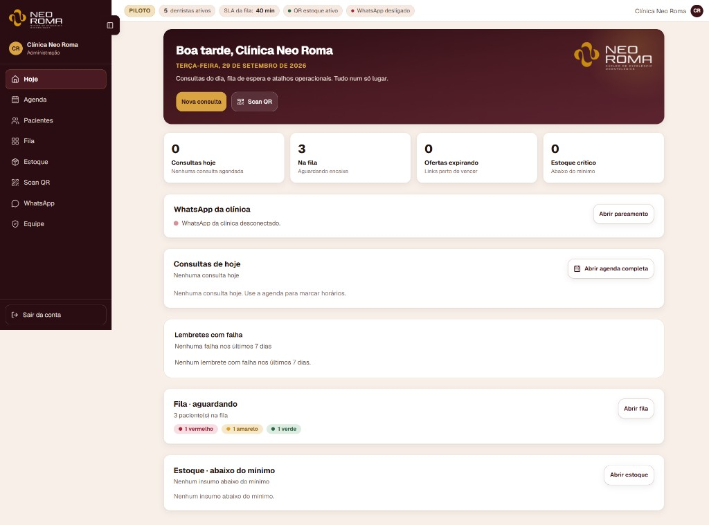
Resumo operacional · perfil administração
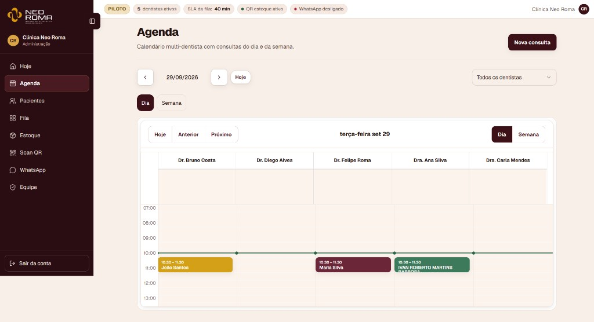
Visão dia · uma coluna por dentista
Módulo · Agenda
Recepção no computador
Calendário com coluna por profissional.
Nova consulta, editar, cancelar e remarcar arrastando.
Bloqueio automático se dois pacientes no mesmo horário.
Roteiro de fala
A recepção opera a agenda. Você e os colegas só consultam no
celular, sem risco de remarcar sem querer.
Módulo · Agenda
Dentista no celular
Lista do dia filtrada por profissional. Toque na consulta para
detalhes e atalho ao prontuário.
Roteiro de fala
Na sala, você abre o celular, vê só sua agenda e entra na ficha
do paciente em dois toques.
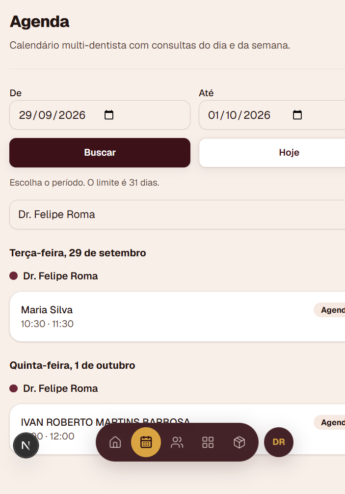
Mobile first · Dr. Felipe RomaMódulo · Pacientes
Prontuário completo na ficha
Cadastro com consentimento LGPD registrado.
Card na ficha: anamnese vigente e último procedimento sem abrir
todas as abas.
Abas: Resumo, Anamnese, Odontograma, Evoluções e Pós-cirurgia.
Evolução clínica só dentista e administração (recepção não
registra evolução).
Roteiro de fala
O prontuário segue o que a clínica já faz no papel, só que com
histórico, busca e mídia no mesmo lugar.
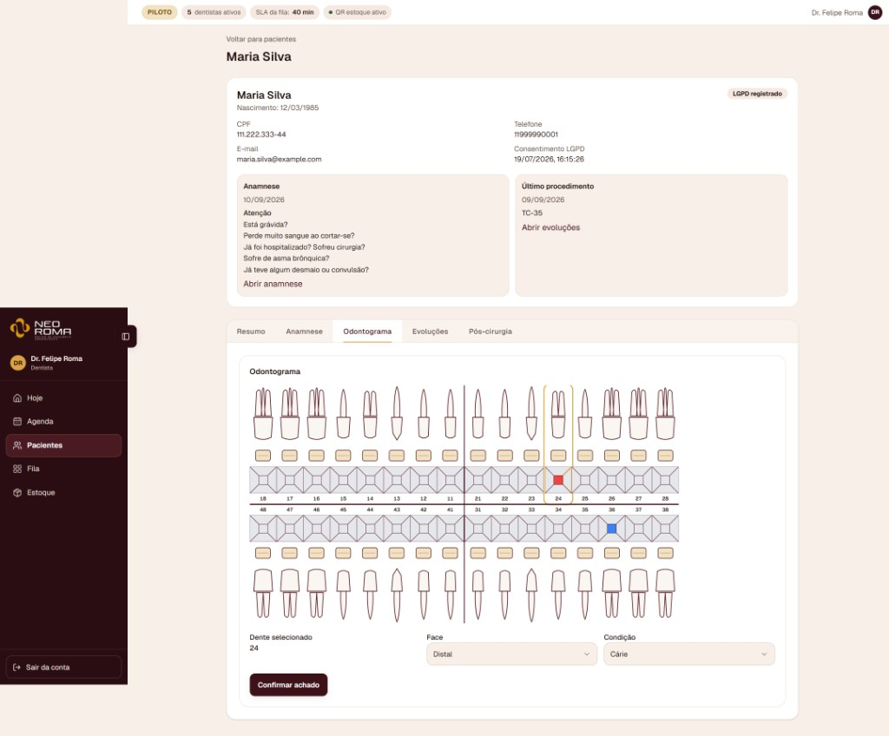
Formato em cruz · dente, face e condição
Odontograma
Mapa dos dentes
Seleção do dente, face e condição. Achados ficam visíveis no
gráfico e no histórico do paciente.
Roteiro de fala
Pedido seu na demo: odontograma em cruz, familiar para a equipe e
legível no desktop.
Evoluções
Áudio, foto e transcrição editável
Gravação no celular durante o atendimento.
Transcrição automática; você corrige antes de salvar.
Foto clínica anexada à mesma evolução.
Busca no histórico por palavra ou dente.
Roteiro de fala
Você fala na sala, o sistema transcreve e você ajusta o texto. Menos
tempo digitando depois do procedimento.
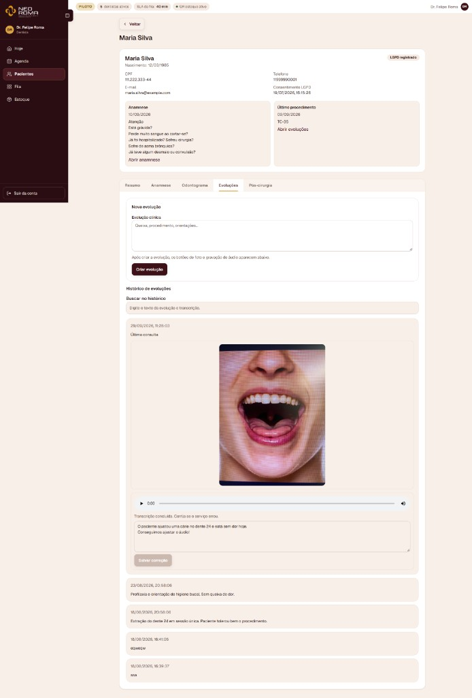
Evolução clínica · Maria Silva
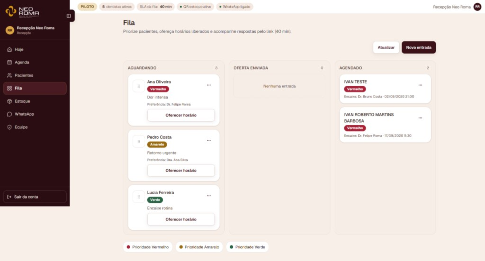
Prioridade vermelho, amarelo e verde
Módulo · Fila
Encaixe organizado
Kanban: Aguardando, Oferta enviada e Agendado. A recepção prioriza
por urgência e preferência de dentista.
Roteiro de fala
Quando cancela uma consulta, o horário vira oportunidade. A fila
mostra quem está esperando e com qual prioridade.
Fila · Oferta
Horário liberado → WhatsApp → consulta confirmada
A recepção oferece o slot; o paciente recebe link com validade de
40 minutos. Aceitou, a consulta entra confirmada na
agenda.
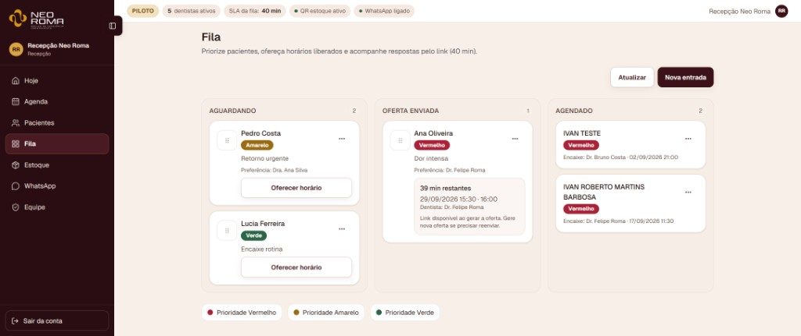
Painel · contagem regressiva da oferta
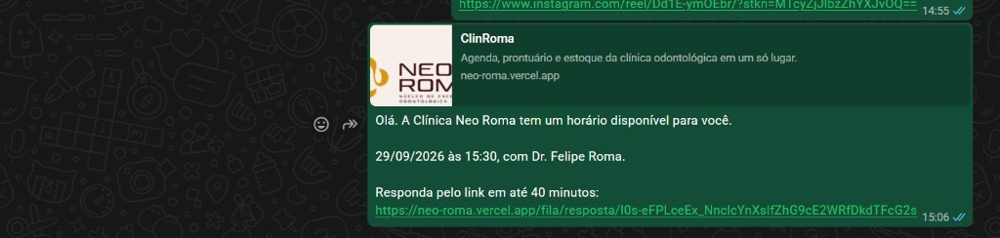
Mensagem automática ao paciente
Roteiro de fala
Menos ligação para encaixe. O paciente responde pelo celular e a
recepção acompanha no quadro se aceitou ou se o link expirou.
Módulo · Estoque
Insumos com saldo e alerta
Lista com unidade, saldo, mínimo e situação (OK ou abaixo).
Registrar compra, novo insumo e scan de retirada.
E-mail automático ao financeiro quando fica abaixo do mínimo.
Roteiro de fala
A auxiliar e a administração enxergam o que está acabando antes de
faltar na sala.
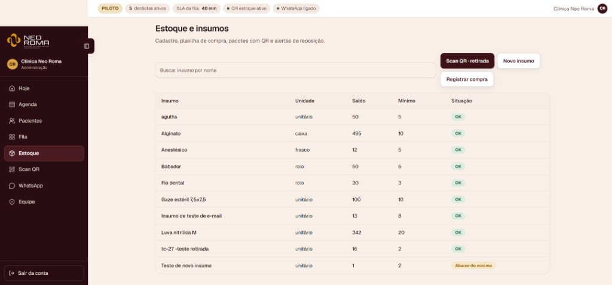
Controle de insumos e alertas
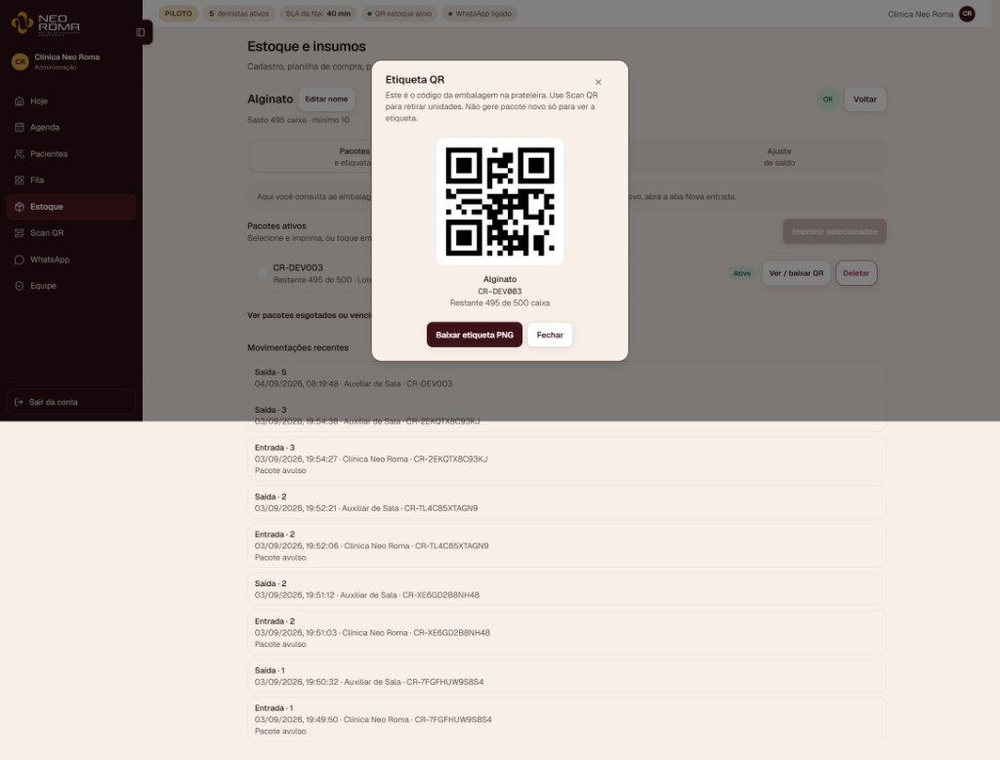
Etiqueta por pacote · movimentações rastreáveis
Estoque · QR
Uma etiqueta por embalagem
Na compra, gera QR para colar no pacote. A auxiliar escaneia na
retirada; o saldo e o histórico atualizam na hora.
Roteiro de fala
Fluxo pensado para o celular na sala: apontou a câmera, confirmou
a quantidade, próximo pacote.
Automático
Lembrete pós-consulta
Quando a recepção marca a consulta como Concluída,
você recebe e-mail com nome parcial do paciente e link para o
prontuário.
Roteiro de fala
É um gancho para revisar o caso depois do dia, sem o paciente ver
dados sensíveis no assunto do e-mail.
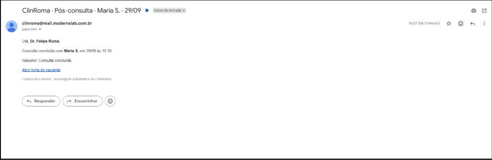
E-mail ao Dr. Felipe Roma
Pós-cirurgia
Cuidados ao paciente por WhatsApp
Na ficha, aba Pós-cirurgia: texto padrão editável, agendar envio ou
enviar agora. Mensagem assinada pela clínica e pelo dentista.
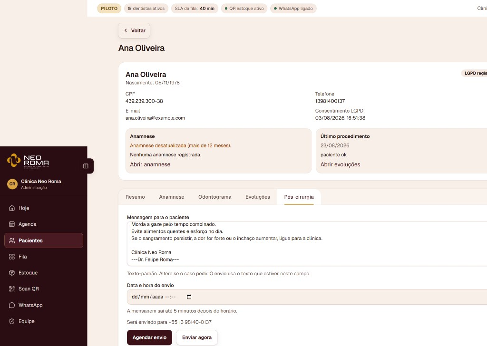
Agendar ou enviar agora
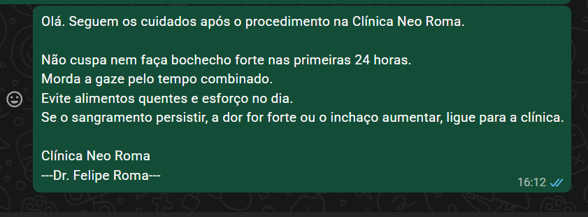
Recebido no celular do paciente
Roteiro de fala
Padroniza o pós-operatório e reduz ligação de dúvida simples. Você
personaliza o texto quando o caso pedir.
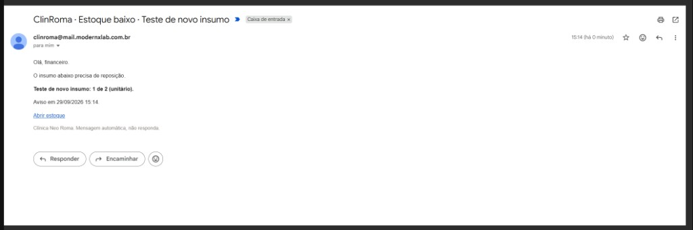
Aviso ao financeiro
Estoque · Financeiro
Reposição sem surpresa
Insumo abaixo do mínimo dispara e-mail para o financeiro com saldo
atual e link para abrir o estoque.
Roteiro de fala
Quem compra recebe o aviso sem depender da auxiliar lembrar de
avisar no fim do dia.
Administração
Equipe e perfis
Cinco perfis: administração, recepção, dentista, auxiliar de sala
e visualização. Cada um vê só o menu permitido.
Roteiro de fala
Na entrega, vocês cadastram a equipe real aqui. Contas de teste
saem; ficam os acessos da clínica.
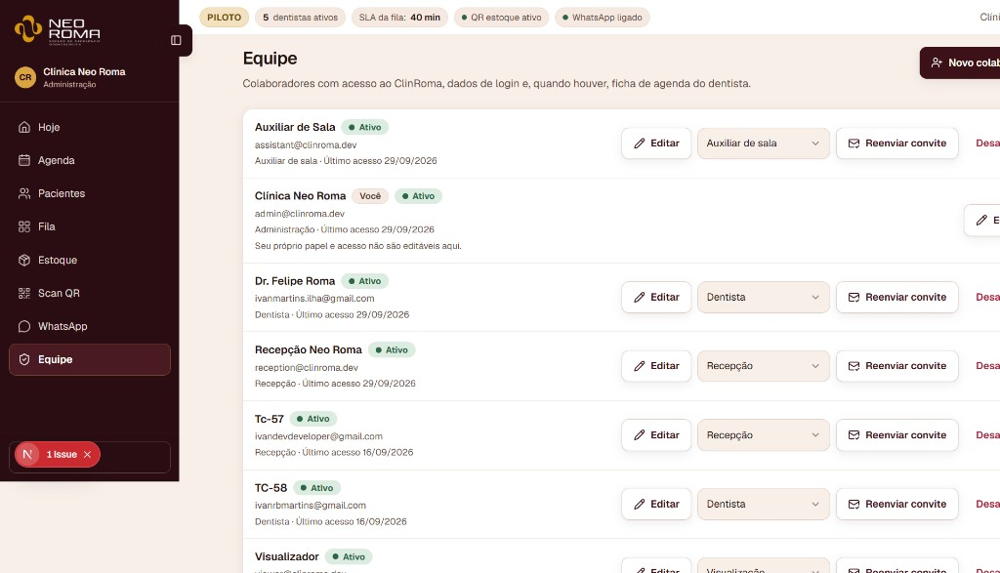
Convites, papéis e último acessoSegurança
Quem faz o quê (resumo)
Ação
Recepção
Dentista
Auxiliar
Marcar / remarcar consulta
Sim
—
—
Prontuário e evolução
Leitura + cadastro
Sim
—
Fila e oferta WhatsApp
Sim
Consulta
—
Scan QR retirada
—
—
Sim
Gestão de equipe
—
—
—
Administração: acesso total. Visualizador: só leitura de agenda e
cadastro básico.
Roteiro de fala
Isso protege o prontuário e evita que alguém mexa em módulo que não
é da função. Detalhes no manual que entregamos com o sistema.
Próximos passos
Piloto pronto para uso
Endereço de produção: neo-roma.vercel.app
Manual da equipe em docs/manual-usuario/
Limpeza dos dados de teste e contas reais na Equipe
Roteiro de fala
Felipe, o MVP que combinamos está funcionando. Próximo passo é
operar na clínica com dados reais, ajustar o que aparecer no dia a
dia e fechar o treino de cada perfil. Obrigado pela confiança no
piloto Neo Roma.